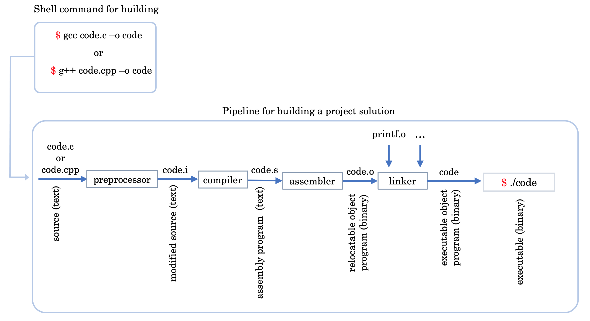

$ g++ -o hw hw.cpp
$ ./hw
So what's the difference between header-files and source-files? A source file is a translation unit: the compiler is pointed at it directly and produces one object file from it. A header file is never compiled on its own — it is textually pasted into every source file that #includes it, and is compiled as part of each of those. That is why a header should contain declarations rather than definitions, and why one should never #include a source file.
C/C++ programs are built in a two stage process. First, each source file is compiled on its own. The compiler generates intermediate files for each compiled source file. These intermediate files are often called object files -- but they are not to be confused with objects in your code. Once all the files have been individually compiled, the system then links all the object files together, which generates the final binary (the program).
This means that each source file is compiled separately from other source files.
Inputs: plusvec.h, plusvec.cpp, minusvec.h, minusvec.cpp, and algebra.cpp which holds main()./* algebra.cpp */
#include <iostream>
#include "plusvec.h"
#include "minusvec.h"
using namespace std;
int main()
{
int u[2] = {100, 200};
int v[2] = {10, 20};
int res[2] = {0, 0};
plusvec(u, v, res, 2);
cout << res[0] << "\n";
cout << res[1] << "\n";
minusvec(u, v, res, 2);
cout << res[0] << "\n";
cout << res[1] << "\n";
return 0;
}/* plusvec.h */
#ifndef PLUSVEC_H
#define PLUSVEC_H
void plusvec(int* x, int* y,
int* res, int d);
#endif
/* plusvec.cpp */
#include "plusvec.h"
void plusvec(int* x, int* y,
int* res, int d)
{
for(int i = 0; i < d; i++)
res[i] = x[i] + y[i];
}
/* minusvec.h */
#ifndef MINUSVEC_H
#define MINUSVEC_H
void minusvec(int* x, int* y,
int* res, int d);
#endif
/* minusvec.cpp */
#include "minusvec.h"
void minusvec(int* x, int* y,
int* res, int d)
{
for(int i = 0; i < d; i++)
res[i] = x[i] - y[i];
}
The most obvious way to build this is to hand every source file to the compiler at once:
# Not preferred approach
$ g++ algebra.cpp plusvec.cpp minusvec.cpp -o compute
$ ./compute
This works, but it does not scale. A much better solution is to compile the project in parts: create the object files, .o, separately, and only then link them together into the final executable. The preferred approach is documented below:
# Preferred approach
$ g++ -c plusvec.cpp
$ g++ -c minusvec.cpp
$ g++ -c algebra.cpp
$ g++ -o compute plusvec.o minusvec.o algebra.o
$ ./compute
g++ -c filename.cpp creates the corresponding
object file filename.o. The last command performs the
linking, joining all the .o files to create the executable
compute.
minusvec.cpp has to be turned into a new
minusvec.o, and the existing
plusvec.o and algebra.o
can be reused at the linking step. In this case we just have
three small files, but in real projects the files may number in the hundreds while the contents
of the files may be huge. Recompiling everything every time will take long. Hence compilation in parts is
convenient for large scale projects.
/* getvec.h */
struct Vec {
int* data;
int d;
};
int* getvec(int d, int initval);
/* plusvec.h */
#include "getvec.h"
int* plusvec(int* x, int* y, int d);
/* minusvec.h */
#include "getvec.h"
int* minusvec(int* x, int* y, int d);
/* getvec.cpp */
#include <cstdlib>
#include "getvec.h"
int* getvec(int d, int initval) {
int* v = (int*) calloc(d, sizeof(int));
for(int i = 0; i < d; ++i) v[i] = initval;
return v;
} /* plusvec.cpp */
#include "plusvec.h"
int* plusvec(int* x, int* y, int d)
{
int* res = getvec(d, 0);
for(int i = 0; i < d; i++)
res[i] = x[i] + y[i];
return res;
}
/* minusvec.cpp */
#include "minusvec.h"
int* minusvec(int* x, int* y, int d)
{
int* res = getvec(d, 0);
for(int i = 0; i < d; i++)
res[i] = x[i] - y[i];
return res;
}
/* algebra.cpp */
#include <iostream>
#include <cstdlib>
#include "plusvec.h"
#include "minusvec.h"
using namespace std;
int main() {
int u[2] = {100, 200};
int v[2] = {10, 20};
int* res = plusvec(u, v, 2);
cout << res[0] << "\n";
cout << res[1] << "\n";
free(res);
res = minusvec(u, v, 2);
cout << res[0] << "\n";
cout << res[1] << "\n";
free(res);
return 0;
}
Because algebra.cpp includes both plusvec.h and minusvec.h, and each of those includes getvec.h, the preprocessor pastes the contents of getvec.h into algebra.cpp twice. The compiler therefore sees struct Vec defined two times and refuses to continue:
$ g++ -c algebra.cpp
In file included from minusvec.h:3,
from algebra.cpp:6:
getvec.h:3:8: error: redefinition of ‘struct Vec’
3 | struct Vec {
| ^~~
It is worth being precise about what does and does not break here. Repeating a function declaration such as int* getvec(int, int); is perfectly legal — you can write it a hundred times and the compiler will not complain. What cannot be repeated is a definition: a struct or class, a typedef, an inline function with a body, or a variable. Since almost every real header eventually contains one of those, headers are guarded as a matter of habit rather than only when the error appears.
The fix is the include-guard, and it goes inside the header being protected — that is, in getvec.h itself, once:
/* getvec.h */
#ifndef GETVEC_H
#define GETVEC_H
struct Vec {
int* data;
int d;
};
int* getvec(int d, int initval);
#endif
/* plusvec.h */
#ifndef PLUSVEC_H
#define PLUSVEC_H
#include "getvec.h"
int* plusvec(int* x, int* y, int d);
#endif
/* minusvec.h */
#ifndef MINUSVEC_H
#define MINUSVEC_H
#include "getvec.h"
int* minusvec(int* x, int* y, int d);
#endif
The first time the preprocessor reaches getvec.h,
GETVEC_H is not yet defined, so it defines the macro and keeps
the body. The second time — arriving via minusvec.h —
GETVEC_H is already defined, so everything up to the matching
#endif is skipped. The struct is therefore defined exactly once,
and the file compiles.
Note that the guard lives in the header it protects, not at the places that include it. That is what makes it reliable: getvec.h is now safe no matter who includes it or how many times, and nobody who includes it has to remember anything. For the same reason plusvec.h and minusvec.h are given guards of their own above — every header you write should have one. The macro name is conventionally derived from the file name so that it stays unique across the project.
The sources — getvec.cpp,
plusvec.cpp, minusvec.cpp
and algebra.cpp — need no change at all.
Compilation of big projects involving multiple source-files and their headers is a tedious job. Compiling them repeatedly especially during debugging is an extra headache. Automation tools help. Makefile is such a tool that can take much of the load off your head.
Consider one of the previous examples where we compiled the sources into the executable like this:
$ g++ plusvec.cpp minusvec.cpp getvec.cpp algebra.cpp -o compute
target: prerequisites
recipe
A target is usually (i) the name of a file that is generated by a program (executable or object files), or (ii) the name of an action to carry out, such as 'clean'.
A prerequisite is a file (or several files) that is (are) used as input(s) to create the target.
A recipe is an action that make carries out. A recipe may span several lines, each holding one command. Every recipe line must begin with a tab character, not spaces — this is the single most common cause of the error missing separator.
The following simple makefile illustrates one of our build processes mentioned above.
.PHONY: all clean
all: compute
compute: plusvec.cpp minusvec.cpp getvec.cpp algebra.cpp
g++ plusvec.cpp minusvec.cpp getvec.cpp algebra.cpp -o compute
clean:
rm -f compute
Our Makefile has a target 'all' with a prerequisite but no recipe, a target 'compute' with both prerequisites and a recipe, and a target 'clean' with a recipe but no prerequisite. But how does the Makefile work? Read the passage below for details.
The .PHONY line declares that 'all' and 'clean' are action names, not files to be built. Without it, creating a file called clean in the directory would make make clean silently stop working, because make would see the target as already up to date.
$ make, make reads the makefile in
the current directory and proceeds by processing the first target (default target). In the example,
the first target is 'all' which has prerequisite 'compute' as the next target. So the next target
'compute' has prerequisites that are just the source files and hence are available in the current
directory. Then 'compute' starts with the rule that is essentially creating the executable 'compute'.
When you type make clean the 'clean' target is executed.
So far the makefile rebuilds everything whenever anything changes. To get the selective recompilation described in section 2 — where only the file you edited is compiled again — each object file needs its own rule, listing the source and the headers it depends on:
.PHONY: all clean
all: compute
compute: algebra.o plusvec.o minusvec.o getvec.o
g++ algebra.o plusvec.o minusvec.o getvec.o -o compute
algebra.o: algebra.cpp plusvec.h minusvec.h getvec.h
g++ -c algebra.cpp
plusvec.o: plusvec.cpp plusvec.h getvec.h
g++ -c plusvec.cpp
minusvec.o: minusvec.cpp minusvec.h getvec.h
g++ -c minusvec.cpp
getvec.o: getvec.cpp getvec.h
g++ -c getvec.cpp
clean:
rm -f *.o compute
Now if any single source is modified, you don't have to recompile everything — only what you modified. Editing plusvec.cpp and running make recompiles just plusvec.o and relinks.
Listing the headers as prerequisites matters more than it looks. If algebra.o depended only on algebra.cpp, then editing getvec.h would leave make with nothing to do — it would report Nothing to be done for 'all' and quietly leave you with a stale executable built against the old header.
# CXX is the compiler to use.
CXX = g++
# CXXFLAGS holds the options passed to the compiler.
CXXFLAGS = -Wall -Wextra
.PHONY: all clean
all: compute
compute: algebra.o plusvec.o minusvec.o getvec.o
$(CXX) algebra.o plusvec.o minusvec.o getvec.o -o compute
algebra.o: algebra.cpp plusvec.h minusvec.h getvec.h
$(CXX) $(CXXFLAGS) -c algebra.cpp
plusvec.o: plusvec.cpp plusvec.h getvec.h
$(CXX) $(CXXFLAGS) -c plusvec.cpp
minusvec.o: minusvec.cpp minusvec.h getvec.h
$(CXX) $(CXXFLAGS) -c minusvec.cpp
getvec.o: getvec.cpp getvec.h
$(CXX) $(CXXFLAGS) -c getvec.cpp
clean:
rm -f *.o compute
Building a C++ project of any size comes down to three habits, each of which we have now seen in turn.
First, compile in parts. Turning each source file into its own object file and linking them at the end costs nothing on a three-file example, but it is what keeps a thousand-file project from recompiling in full every time you fix a typo.
Second, guard every header. Put the #ifndef /
#define / #endif
pair inside the header itself, so that it is safe no matter who includes it or how often.
A header that protects itself needs nothing from the files that use it.
Third, let make do the bookkeeping. Once the dependencies — sources
and headers — are written down honestly in a Makefile, a single
make rebuilds exactly what changed and nothing else.
None of this is specific to the toy vector example used here. The same three ideas scale essentially unchanged to real codebases, which is why they are worth getting into your fingers early.